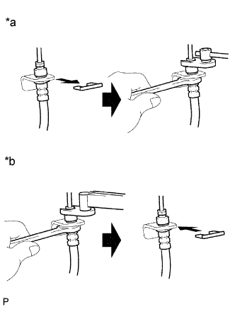

Тщательно следите за тем, чтобы детали заменялись правильно. Неправильно выполненная установка или ремонт может ухудшить эксплуатационные качества тормозной системы и создать опасные ситуации при движении.
ПРИМЕЧАНИЕ:
При ремонте тормозной системы обязательно поддерживайте чистоту деталей тормозной системы и рабочей зоны.
Учитывая, что трубопроводы тормозной системы являются крайне важными деталями, обеспечивающими безопасность при вождении, разбирать трубопроводы разрешается только при обнаружении утечек тормозной жидкости. При обнаружении любой неисправности замените деталь новой.
При снятии узлов и деталей тормозной системы необходимо плотно закрывать трубные соединения во избежание попадания в трубопроводы посторонних материалов – таких, как пыль или грязь.
При снятии или установке трубопроводов тормозной системы старайтесь не повредить и не деформировать их.
При установке трубопроводов и гибких шлангов тормозной системы убедитесь, что они не перекручены и не изогнуты.
Если крепление гибкого шланга не соответствует вырезу на кронштейне, слегка скрутите шланг, чтобы вставить его.
На поверхности гибких шлангов не должно быть тормозной жидкости, смазки и т.п.
При установке трубопроводов в пластмассовый фиксатор убедитесь, что они надежно закреплены и не пережаты.
Запрещается повторно использовать зажим, снятый с гибкого шланга.
После установки трубопровода или гибкого шланга тормозной системы убедитесь, что он не задевает какие-либо другие детали и узлы.
Не допускайте попадания тормозной жидкости на окрашенные поверхности – например, на кузов автомобиля. При попадании тормозной жидкости на окрашенные поверхности незамедлительно сотрите ее.

При отсоединении гибких шлангов и трубопроводов тормозной системы соблюдайте следующий порядок.
Обозначения на рисунке
*a
Отсоединение
*b
Соединение
Снимите фиксатор.
Удерживайте гибкий шланг ключом. Отсоедините трубопровод тормозной системы с помощью разрезной головки, не деформируя его.
При подсоединении гибких шлангов и трубопроводов тормозной системы соблюдайте следующий порядок.
Удерживайте гибкий шланг ключом. Подсоедините трубопровод тормозной системы с помощью разрезной головки, не деформируя его.
Установите новый фиксатор.
При подсоединении трубопроводов тормозной системы и двухсторонних переходных элементов соблюдайте следующий порядок.
Подсоедините трубопроводы тормозной системы к двухстороннему переходному элементу и временно затяните конусные гайки трубопроводов тормозной системы.
Поддерживайте двухсторонний переходной элемент во избежание деформации трубопроводов тормозной системы и вверните болт для закрепления двухстороннего переходного элемента на раме.
Поддерживайте двухсторонний переходной элемент во избежание деформации трубопроводов тормозной системы и затяните конусные гайки трубопроводов тормозной системы с заданным моментом с помощью разрезной головки.
Подсоедините зажим к трубопроводам тормозной системы и переходному элементу с помощью 2 болтов.